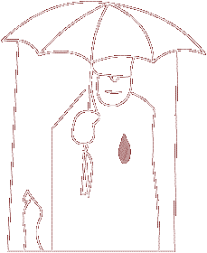

| 
|
Paraplytanker. Skrevet av Olve Askim
Det regner.
Jeg går med paraply. Det er fint å ha paraply når det regner. Jeg rusler nedover gaten og legger merke til en butikk. En paraplybutikk. Det er ikke dumt at det finnes paraplybutikker tenker jeg. Jeg titter inn av vinduet. Det er paraplyer i alle fasonger, størrelser og farger. De henger på stativer og ligger stablet i skap. Det er paraplyer overalt. Vegger og tak. Og en liten dame. Det er rart, tenker jeg. Der inne står det en liten dame som har viet sitt liv til paraplyer. Kanskje heter hun Reidun? Jeg lurer på om Reidun der inne har drømt om å starte paraplybutikk siden hun var liten. Satt hun på skolebenken en gang under krigen og drømmende tegnet små paraplyer i margen? Eller kom det plutselig? Kanskje var Reidun ute i kraftig regnvær en gang på 50 tallet helt uten paraply. Kanskje pådro hun seg en kraftig snue og ble sengeliggende den dagen fordi hun ikke fant en butikk som solgte paraplyer. Og dermed tenkte hun, jeg skal jammen åpne en paraplybutikk så folk kan få seg en paraply når det virkelig gjelder. Også gjorde hun det. Eller kanskje er det en tradisjonsrik familiebedrift. Reiduns familie har kanskje holdt på med paraplyer i generasjoner. Hennes tipptippoldefar var paraplykonge. Paraplymogul! Kanskje har han mottatt priser. Gullparaplyen for eksempel. Hvem vet. Det er sent på ettermiddagen. November og mørkt. Snart skal Reidun hjem. Hun har sikkert en fin paraply. Når hun kommer hjem spør mannen hennes om hun solgte mange paraplyer idag. Ja, idag gikk det bra sier hun og så forteller Reidun entusiastisk om en ny paraply som har kommet på markedet. En fransk modell. Den har kanskje en ny måte å folde seg inn på. Eller et varmende håndtak. Eller kanskje et nyutviklet paraplystoff som preller av vann, som på gåsa. Slik at man slipper å legge paraplyen åpen i entreen fordi den, takket være det nye franske stoffet, er tørr allerede. Eller man kan kanskje knøvle den sammen til en liten ball som passer i kåpelommen? Kanskje kommer den til og med med futteral. Hun gleder seg veldig til denne. Den er under bestilling og kommer til uka. Hun viser bilder av paraplyen til mannen i det månedlige paraplytidsskriftet hun abonnerer på og forteller at den kommer i ikke mindre enn fjorten farger og tyve forskjellige mønstre. Håndtak kan skiftes og fåes i hele femti varianter, alt ettersom. Og mannen lytter. Kanskje han selv driver skolisseforretning? Jeg lurer på om det finnes diskusjonsgrupper på internett for paraplyentusiaster. Reidun er nok aktiv der. Eller store amerikanske nettsider hvor man kan bestille tusenvis av forskjellige paraplyer. Det skal jeg sjekke når jeg kommer hjem, tenker jeg. Det gjør sikkert det. Reidun samler på paraplyer også. Hun har paraplyer fra første verdenskrig og fra alle tenkelige kanter av verden hvor det regner. En morsom en fra Russland. En japansk en som er formet som en pingvin. Hun har et stort rom. Det er bittesmå barneparaplyer i utallige farger og former. Det er kjempestore seilduker av noen paraplyer beregnet på mindre følger hengt oppunder taket. En paraply har hun satt i monter. Den var sikkert eid av en berømt person og kjøpt på auksjon. Hun var på med nebb og klør der. Den skulle hun ha, koste hva det koste ville. Også samler hun på andre paraplyting. Paraplyfigurer, paraplymotiver og paraplybilder.... paraply i solnedgang. Jeg smiler for meg selv. Hun er en reser på paraplyer og var sikkert med i Kvitt eller Dobbelt og rasket til seg 48000 kroner som ingenting. Selvsikker som hun er kastet hun nok om seg med tilleggsopplysninger langt utover det som over hodet var nødvendig. I tillegg fikk hun en tur for to til den årlige paraplymessen i Wuppertal samt en signert paraply i begrenset opplag av en berømt paraplymaker, en eksklusiv porselensparaply pluss et stort paraplyleksikon. Jeg ser det for meg. Jeg stopper opp. Det er en merkverdig verden, tenker jeg. Hun er kanskje litt gal? Så går jeg videre. Tenk å havne i en paraplydiskusjon med Reidun. Herregud. Jeg hadde ikke hatt en sjans. Da hadde det vært hakket bedre å diskutere skolisser med mannen hennes. Jeg har nemlig lest at de små plastbitene på skolissetuppene heter "aglets" på engelsk. Det ville nok ha imponert ham. Men om paraplyer vet jeg ytterst lite utover det aller nødvendigste. Reidun ville revet meg i fillebiter og bombardert meg med paraplybegreper, historikk og filosofi og gitt meg grundig refs for måten jeg behandlet min egen paraply fra banken på og at jeg i det hele tatt hadde en slik gratisparaply med logo på. Blasfemi! Så hun ikke litt morskt ut på meg da jeg passerte henne i butikken? Nei, Reidun er nok ikke lett, tenker jeg. Heller ganske vanskelig. Hun sender sikkert anonyme hatbrev til regntøyprodusent Helly Hansen. Og Reidun om sommeren. På hete dager. Måneder uten et eneste drypp fra himmelen. Jeg grøsser ved tanken. Reidun, damen som elsker regnfulle dager med storm i kastene hvor paraplyer rundt om i landet vrenges til formløse, ugjenkjennelige tøystrimler med vridde metallsplinter pekende ut i alle retninger og vannet fosser ned og kommer inn fra alle kanter. DA er hun nok lykkelig. Jeg går nedover gaten og skotter opp på min egen paraply. En av stengene er litt knekt, men den beskytter allikevel og er fin. Jeg unngår akkurat å kollidere med en mann. Han virrer formålsløst rundt på fortauet, med campingsandaler, uten jakke, i pøsregn. Hendene er knuget rundt en halvliters ølboks bak på ryggen og han har et plastrør som kommer ut av nesen og forsvinner inn under skjorta. Men paraply har han ikke.
|